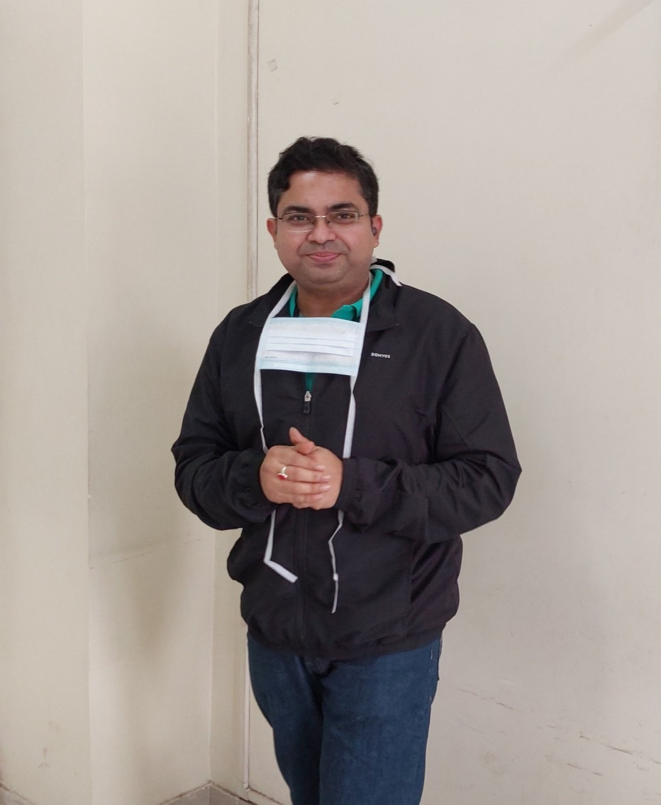

Start from wherever you feel comfortable
Your first consultation is online, so you can begin without travelling to a clinic.
Private online ED consultation for men aged 40–55
In a one-on-one consultation with Dr. Prabir Basu, discuss what has changed, what you have tried, and which next steps may be appropriate. Start online, without an initial clinic visit.
Book a paid online consultation Chat on WhatsAppThe consultation is confidential. Any examination or procedure requiring an in-person visit can be discussed during the call.

Consultant Urologist & Andrologist
01 / WHEN THINGS FEEL DIFFERENT
You may still want to be close to your partner. But when you’re unsure how your body will respond, it can be hard to relax and enjoy the moment.
You can get an erection, but struggle to keep it.
Erections that used to feel reliable now vary from one occasion to the next.
Medication helps sometimes, but you still wonder whether it will work.
You find yourself avoiding intimacy because you don’t want another disappointing experience.
You may also be left with questions you haven’t felt comfortable asking: Why is this happening? Is it temporary? Are there other options? Waiting can mean more time spent with that uncertainty, including with your partner.
02 / THE CONSULTATION
In a one-on-one online consultation, you can tell Dr. Basu what is happening, what you have already tried, and what you want to improve.
Together, you can discuss what may need further assessment and which options may be relevant to your situation.
These can include medical treatment and, where appropriate, surgical options that would require in-person care.
03 / A FIRST STEP THAT FITS YOUR LIFE
Your first consultation is online, so you can begin without travelling to a clinic.
You have space to explain what has changed and ask questions directly, in a confidential conversation with the doctor.
Rather than deciding on a treatment before you have spoken, you can discuss your concerns, previous treatment, and possible next steps with an andrology-focused specialist.
04 / YOUR SPECIALIST
Consultant Urologist & Andrologist
Your one-on-one consultation is with Dr. Basu, an andrology-focused specialist.
05 / BEFORE YOU BOOK
About your first conversation
with Dr. Basu.
Yes. The one-on-one consultation is delivered online, so you do not need to visit a clinic for the initial call.
Yes. It is offered as a confidential, one-on-one conversation.
No. This is a paid consultation.
You can discuss your erectile difficulties and the medical, surgical, and coaching options that may be relevant to your situation.
No. The initial consultation is online. A procedure such as surgery would require in-person care.
No particular result can be guaranteed. The consultation gives you an opportunity to discuss your concerns and possible next steps with a specialist.
A CONVERSATION IS A PLACE TO START
You don’t need to decide on a treatment today. Start with a private conversation with Dr. Basu to ask your questions and understand what your next steps could be.
Book a paid online consultationYour first conversation takes place online. If an examination or in-person treatment may be needed, that can be discussed during the call.